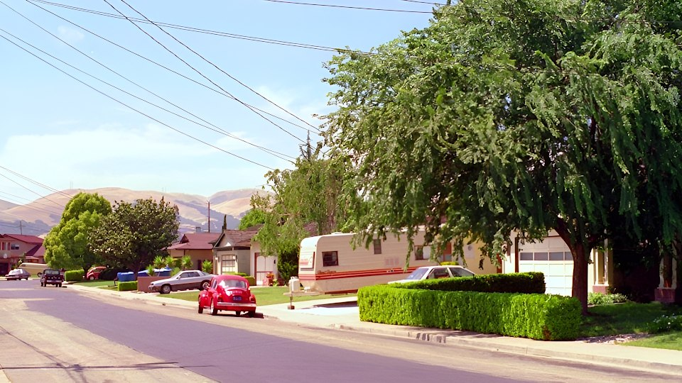

Sam Trenholme’s blog

Remembering Marshall
August 25, 2025
Marshall was a friend and father figure to me at a very key coming of age time in my life. I remember my time with him.When I first met Marshall, I immediately liked the guy; he was friendly and took an interest in me. I was 20 and he was about 40, and had an interest in fast cars and young women. None of this I paid attention to at the time; I just liked the fact he was very friendly to me.
Marshall had a small business that looked very successful. I remember us driving around in his Porsche, with him telling me, in an excited voice, that we were going to be millionaires. I was taken in by the dream. I felt, like he did, that great financial success was just around the corner. So I started working for him. There was one small issue: His company was temporarily having some minor financial problems, and he couldn’t pay me for the moment. But I knew that was going to change.
The computer I really wanted was this tiny sub-sub-laptop, in an era when tiny computers like that cost a lot of money.
I knew I was going to get one as soon as Marshall’s company started taking off and the money started coming in. His business consisted of writing a Beauty Salon scheduling program. I started improving the program so we could have the successful business Marshall kept talking about.
==My days “working” for Marshall==
I had a cat named Misty at the time
Every morning, I would wake up, shower, and get dressed. Marshall would soon arrive in his Porsche at my house and honk the horn, which told me to get out of the house and go in to his car to go to his office. After working for Marshall all day, I would socialize with him and his friends. This was my entire social life.
Marshall’s program was slow work; the program was nowhere near ready to ship and had a lot of bugs. Despite this, Marshall was trying to sell the application. He had one salon that he gave a computer with this application to; the owner of the salon didn’t need to pay Marshall for the computer, but instead gave Marshall some money every month.
We were regularly getting phone calls from him about how the program wasn’t working; he was getting more and more upset every time he had to call us. We kept putting band-aid fixes on it, but it wasn’t enough.
We were getting a lot of other calls. Indeed, Marshall made me the person answering all of the calls, and with good reason. Bill collectors were constantly calling us. Bill collectors for everything: Software not paid for; stuff bought with postdated and bouncing checks; computers he bought and never fully paid off; and so on.
==Marshall’s shattered dream==
One phone call in particular disturbed Marshall greatly. It was some loan company; Marshall took the call and was clearly upset. He demanded to talk to the person in charge; he told him he had the money; he mentioned something about a car. After the phone call, I could see a pained look on his face; he just said nothing and I said nothing too. There was nothing to say.
That evening, as he was driving home, I asked him what the phone call was about. He assured me: “Oh, just some spiritually sick people who have a lot of insecurities. Nothing to worry about.” I almost completely believed him.
The next day, someone came to repossess Marshall’s car. It would seem that Marshall hadn’t made a single car payment after getting the car three months before. He called up the financial company again, talking to their boss, assuring them he could afford the car; telling them that, if they would only give him a little more time, he would be making the payments. The car was in the garage and the man who came for the car was smoking heavily and called the police. He was waiting to get the garage door opened and take the car.
Finally, after about 30 minutes of Marshall talking to the financial loan company, the repossession man came in to the office where Marshall was, got on the phone, and said “OK, have you had enough of this guy’s bullshit? I’m taking the car.” As Marshall finally gave the car to them, I could see he was in a lot of pain, though he had too much pride to openly weep—not a very productive day for work.
When Marshall’s girlfriend came home from work that evening, we went to see a movie at the theater together that night.
The repossession of the car was what woke me up to seeing the downward spiral Marshall was actually in. After that, things were not the same. I still held on to the hope things would change, but they didn’t. Things got worse and worse; Marshall was now losing his house and every possible avenue for the company getting money was closing. Marshall was getting more and more desperate. He became verbally abusive, yelling at me for no reason. I became the sounding box for the frustrations he was having with his company falling apart.

The neighborhood where I worked for Marshall
When I took work breaks, I would take this walk in the neighborhood Marshall lived in; the weather was beautiful sunny California weather. One day I brought my camera with me to work; one of the pictures I took was of that walk I took every day; it’s a picture looking out on a street in the neighborhood, with a red Volkswagen bug parked on the street. It was a beautiful day with hardly a cloud in the sky; I still have that picture today to bring back memories of that time in my life.
Desperate for money, one day Marshall got out his phone book and started calling up some local salons. All of them gave Marshall the same reply: They were not interested. His tone got more desperate and shill with each salon he called up; after the fourth one, he just gave up entirely and had a dejected look of despair on his face.
After getting all these rejections, Marshall then left the room and came back an hour or two later; I could see from his face that he had been crying. He still had his pride, so he didn’t cry in front of me. He never let go of his pride.
The writing was on the wall: There was no money stream for Marshall’s company.
==Ending things with Marshall==
Marshall was, when he could, using his girlfriend’s car to take me to work; sometimes he couldn’t and I would have to ride a bicycle to work. Things were not changing. One evening, as I was riding home, my bicycle broke down and I had to walk it home. It was then I decided I had enough of working and not getting paid. That was my last day working for Marshall. I was through.
I ended up going back to school and eventually got high paying jobs as a programmer in the computer industry.
I had mostly cut off all contact with Marshall. I would see him sometimes, and we even had the occasional conversation, but it was never the same. He was no longer a father figure to me, and no longer the center of my life.
Marshall eventually married, and later on divorced, his girlfriend. I talked to Marshall one last time many years later; we said a final “I love you” to each other. Marshall died a little over a decade after our final conversation.
==A time of spiritual growth==
The time I was with Marshall was a very key part of my spiritual growth. We would have long discussions, sometimes arguments, about God. When I started “working” for Marshall; I was an atheist. Just after I broke contact with him, I had a conversion experience and became a Christian; that experience was how I went from being a child to being an adult. This experience would not had been possible had Marshall not been a part of my life.
It is a time of my life I remember very fondly.
I have a new mirror of this blog here:
https://samboy.github.io/blog/
Comments for blog entries can be seen in the forum.